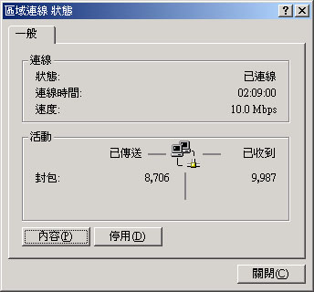
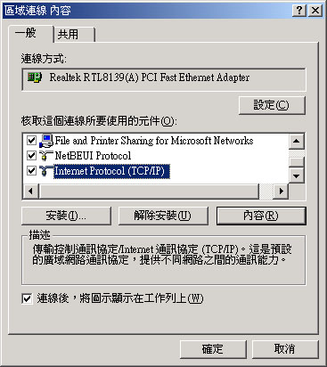
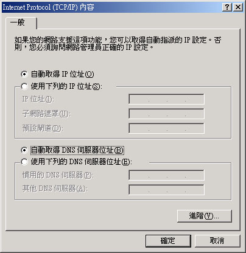

| 如果您在工作单位使用的是笔记型计算机，而且常常要带着您的笔记型计算机到处跑，那么由前几章的『连上 Internet 』设定当中，会发现，哇！我的网络卡参数要常常修改啊！而且，每到一个新的地方，就得问清楚该地的 Server 提供的网络参数才行！真是麻烦～～这个时候，动态主机设定协议 (DHCP) 可就大大的派上用场啦！DHCP 这个服务器可以自动的分配 IP 与相关的网络参数给 Client 端，来提供 Client 端自动以主机提供的参数来设定他们的网络，如此一来，使用者只要将自己的 Notebook 设定好经由 DHCP 协议来取得网络参数后，一插上网络线，呵呵！马上就可以享受 Internet 的服务啦！很方便吧！所以得来瞧一瞧这个好用的协定喔！ |
| [root@test root]# ifconfig eth0 ifconfig eth0 Link encap:Ethernet HWaddr 00:50:FC:22:9C:57 inet addr:192.168.1.2 Bcast:192.168.1.255 Mask:255.255.255.0 UP BROADCAST RUNNING MULTICAST MTU:1500 Metric:1 RX packets:333678 errors:0 dropped:0 overruns:0 frame:0 TX packets:377219 errors:0 dropped:0 overruns:0 carrier:0 collisions:195 txqueuelen:100 RX bytes:42243563 (40.2 Mb) TX bytes:278373316 (265.4 Mb) Interrupt:10 Base address:0x6100 [root@test root]# arp |
在 Linux 上面 DHCP 套件的安装也是很简单的，不需要以 Tarball 来安装啦！直接拿出您的原版光盘， mount 他，并且找到 dhcp 字样的套件，使用 RPM 安装好就好了！以 mandrake 9.0 及 Red Hat 9 为例的话，您需要的 DHCP 套件为：
# 在 Mandrake 9.0 当中：
[root@test root]# rpm -qa | grep dhcp
dhcp-server-3.0-1rc9.2mdk
dhcp-common-3.0-1rc9.2mdk
dhcp-client-3.0-1rc9.2mdk
# 在 Red Hat 9 当中：
[root@test root]# rpm -qa | grep dhcp
dhcp-3.0pl1-23
dhcp-devel-3.0pl1-23
看到了吧！我们需要的套件在不同的 Linux 版本上面会有些许的差异喔！如果是 Mandrake 系列的话，DHCP 套件档案总数会有三个��！如果没有安装的话，请拿出您的原板光盘(不论是那个 Linux distribution ，应该都是这三个套件名称啦！只是后面的版本可能不一样就是了！但是，需要注意的是，在 Red Hat 上面，这三个套件被整合成为一个，亦即是 dhcp-xxxx.rpm 的档案就是了！)，先挂载上去，然后就以 rpm 给他安装啦！什么？不知道如何搞定 RPM ？唉啊！又得拿出『鸟哥的 Linux 私房菜 -- 基础学习篇』好好的 K 一 K 『 RPM 与 Tarball 的使用』。另外，如果在系统当中没有找到 dhcp 套件的话，还可以使用前面 网络升级套件 章节提到的 apt-get 或者是 urpmi 都是很好的安装方式�龋� ^_^

| [root@test root]# rpm -qc dhcp-server (在 Red Hat 使用 rpm -qc dhcp ) /etc/dhcpd.conf.sample /etc/rc.d/init.d/dhcpd /etc/sysconfig/dhcpd /var/lib/dhcp/dhcpd.leases |
| [root@test root]# vi /etc/dhcpd.conf # 这个档案在各家 Linux 中，可能放置的目录不同而且不见得会存在，请自行建立！ # 再次说明，这个档案中，行首为 # 的，则为批注，且， # 1. Global 首先建立整体的设定值，亦即是，当 subnet 或 host # 1.1 设定租约期限： # 1.2 设定领域名称与 DNS IP # 2. 动态 IP 分配的设定： # 3. 静态 IP 的设定： |
| [root@test root]# touch /etc/dhcpd.leases # 建立租约档案同样的，注意您的版本目录！ |
| [root@test root]# vi /etc/rc.d/init.d/dhcpd # 这是启动的 script 档案 # 先找到底下的设定内容，如果没有找到也没有关系，就自行新增吧！ |
| [root@test root]# /etc/rc.d/init.d/dhcpd start 启动的啦！ Starting dhcpd: [ OK ] |
| 1. 最重要的就是察看登录档！也就是 /var/log/messages 这个档案了！ [root@test root]# vi /var/log/messages 先看看登录挡吧！ Nov 23 23:35:09 vbird dhcpd: Wrote 0 deleted host decls to leases file. Nov 23 23:35:09 vbird dhcpd: Wrote 0 new dynamic host decls to leases file. Nov 23 23:35:09 vbird dhcpd: Wrote 0 leases to leases file. Nov 23 23:35:09 vbird dhcpd: dhcpd startup succeeded 一定要看到 Wrote xxxx to leases file 以及 succeeded 的字眼， 才能确定启动成功！ 2. 再来，观察一下 port 有没有在 listen |
| [root@test root]# vi /etc/services 找到这两行： bootps 67/tcp # BOOTP server bootps 67/udp 将他改成 |
| [root@test root]# vi /etc/hosts 127.0.0.1 localhost.localdomain localhost 192.168.1.2 vbird-server 192.168.1.5 static-ip 192.168.1.21 dynamic-021 192.168.1.22 dynamic-022 ..... 192.168.1.100 dynamic-100 |
DHCP 的 Client 端，可以是 Windows 也可以是 Linux 呢！由于我的领域内刚好有两部 Client 端的计算机，一部为 Linux ( Red Hat 7.3 ) 另一部为 Windows 2000 ，这里就提一下，分别是怎样设定的呢？
- Linux 的 DHCP Client 端设定：
设定还真是简单的不行～直接修改一个档案即可！由于我的 Linux 计算机有两块网络卡，其中， eth0 为使用 DHCP 来启动的，所以我就可以修改底下的档案呢：
[root@test root]# vi /etc/sysconfig/network-scripts/ifcfg-eth0
DEVICE=eth0
BOOTPROTO=dhcp <==只要这一行设定对了，其它的不要管！
BROADCAST=192.168.1.255
IPADDR=192.168.1.235
NETMASK=255.255.255.0
NETWORK=192.168.1.0
ONBOOT=yes
GATEWAY=192.168.1.2
需要特别强调的是，Mandrake 与 Red Hat 都使用『BOOTPROTO=dhcp』来设定的！但是， OpenLinux 却是使用『DYNAMIC=dhcp』来设定的！所以要注意您的 Linux distribution 喔！改完之后，就将我们的网络卡关掉再开！请注意，如果您是在远程进行这个动作，您的联机『肯定会挂掉！』，因为网络卡被您关了嘛！呵呵！所以请在本机前面才进行喔！
[root@test root]# ifdown eth0; ifup eth0
Determining IP information for eth0 ..... done
[root@test root]# ifconfig eth0
eth0 Link encap:Ethernet HWaddr 00:54:DG:08:QE:BE
inet addr:192.168.1.100 Bcast:192.168.1.255 Mask:255.255.255.0
UP BROADCAST NOTRAILERS RUNNING MULTICAST MTU:1500 Metric:1
RX packets:590 errors:0 dropped:0 overruns:0 frame:0
TX packets:208 errors:0 dropped:0 overruns:0 carrier:0
collisions:0 txqueuelen:100
RX bytes:55145 (53.8 Kb) TX bytes:29113 (28.4 Kb)
Interrupt:10 Base address:0xd000
棒吧！已经正确的取得 IP 的资料��！
- Windows 2000 底下的 DHCP Client 设定方式：
在 Windows 底下的设定也真是太简单了！这样就 OK 啦！！很简单吧！
- 直接在『网络上的芳邻』按右键，选内容；
- 然后选择『区域联机』那一项，之后会出现如下的图示：
 - 在上图当中，按下『内容』则会出现下面的图示：
 - 然后选择『Internet Protocol (TCP/IP) 』那一项，之后按下内容，会出现选项：
 - 然后自然就是一直按下『确定』！直到回到正常的桌面为止！这样就已经正确的启动了！哇！就是这么简单！
- 手动修订一下网络设定的方式：
- 在 Windows 底下，要修订 IP 的方式依据不同的版本而有不同！如果是 Windows 98 系列的版本，就需要使用『winipcfg』，出现的是窗口画面，您可以自己调一下；
- 在 Windows 2000 底下，我不知道怎么叫出窗口画面，所以直接开启一个『 C:>提示字符』，在『开始』==>『程序集』==>『附属应用程序』里面的『命令提示字符』那个就是啦！
C:\>ipconfig /all <==秀出所有的属性 Windows 2000 IP Configuration
Ethernet adapter 区域联机:
Connection-specific DNS Suffix . : dhcp.vbird.org
Description . . . . . . . . . . . : Realtek RTL8139(A) PCI Fast Ethernet Adapter
Physical Address. . . . . . . . . : 00-40-95-30-43-B4
DHCP Enabled. . . . . . . . . . . : Yes
Autoconfiguration Enabled . . . . : Yes
IP Address. . . . . . . . . . . . : 192.168.1.99
Subnet Mask . . . . . . . . . . . : 255.255.255.0
Default Gateway . . . . . . . . . : 192.168.1.2
DHCP Server . . . . . . . . . . . : 192.168.1.2
DNS Servers . . . . . . . . . . . : 168.95.1.1
139.175.10.20
Lease Obtained. . . . . . . . . . : 2002年11月24日 AM 12:32:54
Lease Expires . . . . . . . . . . : 2002年11月27日 AM 12:32:54C:\> ipconfig /renew <==重新捉 IP 啦！
接着下来，我们就要努力的来除虫了！除虫的第一步，就是察看登录档啦！最常发生的错误其实大概就是：例如底下就是错误讯息的一般显示状态：
- 写错字：不要笑！真的很容易写错字的！这很正常！所以大家要多多的去检查一下：
- 没有加上『 ;』符号号：是的，这也是最常发生的错误啦！
- 新版 DHCP 新增的功能限制：有时后也会有这样的讯息出现呢！
[root@test root]# vi /var/log/messages
Nov 23 23:32:25 vbird dhcpd: /etc/dhcpd.conf line 6: semicolon expected.
Nov 23 23:32:25 vbird dhcpd: option
Nov 23 23:32:25 vbird dhcpd: ^
Nov 23 23:32:25 vbird dhcpd: Configuration file errors encountered -- exiting
Nov 23 23:32:25 vbird dhcpd:
# 这一个例子告诉您，在第六行有错误！什么错误？呵呵！/etc/dhcpd.conf 中仔细检查��！Nov 23 23:34:12 vbird dhcpd: ** You must add a ddns-update-style statement to /etc/dhcpd.conf.
Nov 23 23:34:12 vbird dhcpd: To get the same behaviour as in 3.0b2pl11 and previous
Nov 23 23:34:12 vbird dhcpd: versions, add a line that says "ddns-update-style ad-hoc;"
Nov 23 23:34:12 vbird dhcpd: Please read the dhcpd.conf manual page for more information. **
Nov 23 23:34:12 vbird dhcpd:
# 这个例子则在告诉您，您必须要新增一行字喔！不然不给您启动！ ^_^
这样就能够检验成功了！修改上面是很容易的啦！
再来要讨论的则是那个租约档案的内容问题！去看一下 /var/lib/dhcp/dhcpd.lease 的内容吧！
[root@test root]# vi /var/lib/dhcp/dhcpd.lease
lease 192.168.1.100 {
starts 6 2002/11/23 16:15:22;
ends 5 2002/11/29 16:15:22;
tstp 5 2002/11/29 16:15:22;
binding state active;
next binding state free;
hardware ethernet 00:90:cc:08:49:13;
uid "\001\000\220\314\010I\023";
}
lease 192.168.1.99 {
starts 6 2002/11/23 16:33:16;
ends 2 2002/11/26 16:33:16;
binding state active;
next binding state free;
hardware ethernet 00:40:95:30:43:b4;
uid "\001\000@\2250C\264";
client-hostname "tools";
}
lease 192.168.1.99 {
starts 6 2002/11/23 16:33:21;
ends 2 2002/11/26 16:33:21;
binding state active;
next binding state free;
hardware ethernet 00:40:95:30:43:b4;
uid "\001\000@\2250C\264";
client-hostname "tools";
}
看到了吧！这个就是租约档案的内容啦！详细的记载何时申请的租约，以及期限在哪儿！嗯！这样就完成记录��！